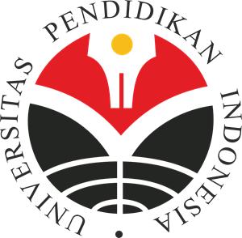

Sistem Informasi Kelautan
Kompetensi lulusan Program Studi Sistem Informasi Kelautan sebagai berikut :
1. Mampu mengidentifikasi, menganalisis, merumuskan, melaporkan dan merekomendasikan
masalah-masalah dan penyelesaian di bidang sistem informasi kelautan baik dalam
lingkup kegiatan penelitian maupun penerapan
2. Menguasai pengetahuan tentang teknologi komunikasi terkini dan aplikasinya untuk
mendukung wirausaha, riset dan meningkatkan kerja
3. Menguasai metode survey dan analisis data, penginderaan jauh, sistem informasi
geografi, dan penulisan karya ilmiah
4. Menguasai bidang aplikasi jekautan, perikanan, oseanografi, meteorologi dan
klimatologi, serta metedologi penelitian
border="1" cellpadding"1" cellspacing="1">
| Tahapan |
Mata Kuliah Reguler |
| Semester 4 |
Pemograman Web |
| Bisnis inteligen |
| Jaringan |
| Aljabar Linear |
| Penginderaan Jauh |